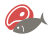
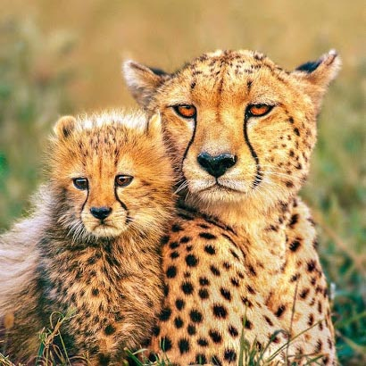

giant Pandas
Native to Southwest China

Eagles
Native to South America


Eagles
Native to South America

Two-toed Sloth
Mesoamerica, South America

cheetahs
Native to Africa

Penguins
Native to Antarctica